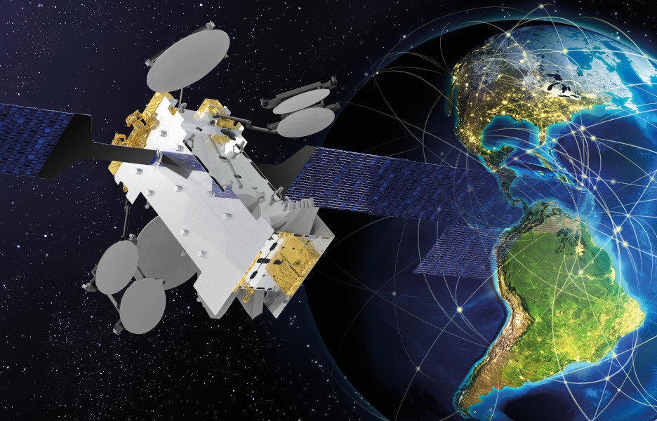
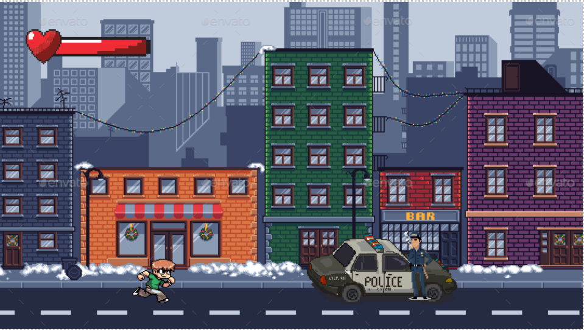
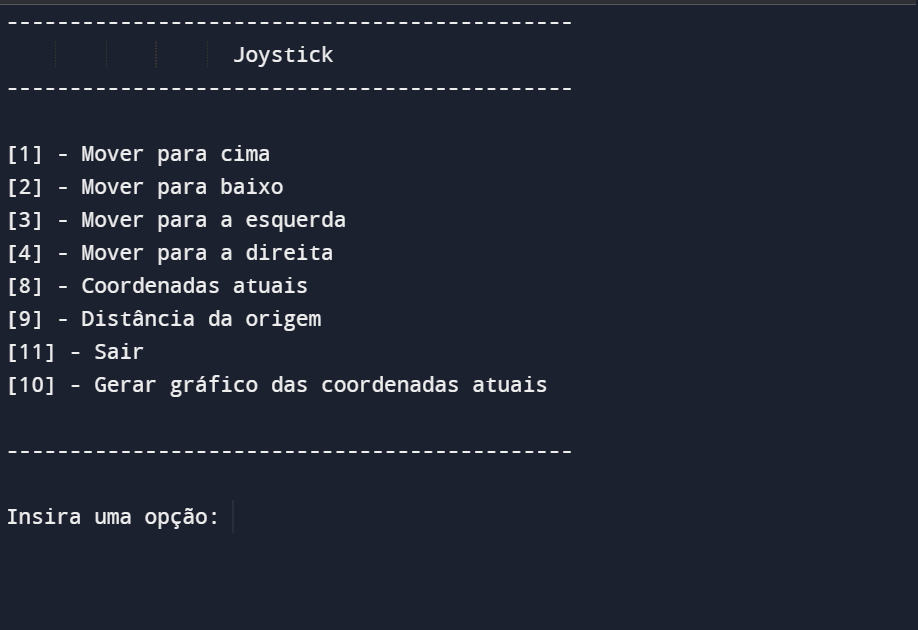

A empresa que trabalho lançou um novo satélite em julho e desde então, todos esses meses estou realizando cursos e treinamentos para adaptação aos novos serviços e tecnologias, principalmente na área de monitoração da capacidade espacial. Com novos clientes adquiridos agora dos Estados Unidos, estou estudando mais o inglês também para ajudar no contato direto com os clientes.

Estou construindo em conjunto com mais cinco alunos o jogo "Fuga no Rio", que foi solicitado como avaliação A4 da disciplina de jogos digitais. Realizamos o GDD e começaremos a construção do jogo na plataforma Unity.

Finalizei o projeto de um programa em python capaz de controlar um joystick, para avaliação 1 da disciplina de programação e sistemas de computação.